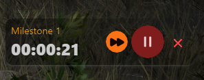

Introducing the new "Offline Mode" feature, allowing you to manage Characters and the Speed Leveling Tracker even when Overwolf game
events are unavailable!
In the "Characters" screen, after adding a Character, it will automatically be marked as "offline." Previously, if the events were down,
tracking your leveling progress wasn't possible. Now, with Offline Mode, we've introduced the ability to manually complete milestones
every 10 levels, providing a balanced solution that allows you to keep track of your progress without needing to click for every level.
How to Use Offline Mode
Create a new Character offline. Steps on how to do this can be found in the
Characters section.
This will automatically activate your new Character in 'Offline Mode', but you can also click the 'Offline' icon in the future
Offline leveling must be started on the Desktop screen, and it will require a long press of 2 seconds on the 'Start' button.
Please note that starting offline leveling will flag your character, making it ineligible for the "Best Run" tracker, but you will
still be able to track your personal progress.
Track your leveling milestones. For every 10 levels, you can manually update your progress.

Once the Overwolf events are back online, simply log into Diablo with your Character selected, and dIVa will automatically merge
tracking with the Speed Leveling Tracker.